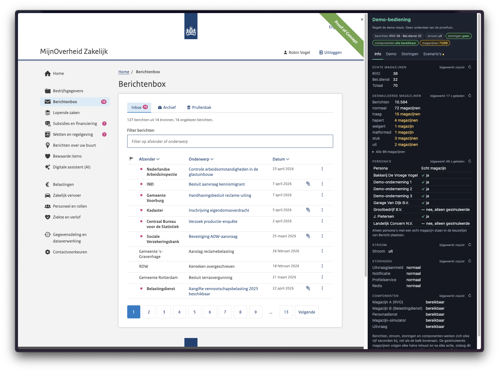

MijnOverheid Zakelijk · 1 oktober 2026
Wat we leren, en hoe we het willen aanpakken
Voor de ondernemer: nu
Demo's, geen memo's

Links het portaal zoals de ondernemer het ziet. Rechts de bediening van de demo.
De demo opent in een nieuw tabblad. Sluit dat tabblad om terug te gaan naar de presentatie.
Notificatiedienst
Kleine teams met een product owner en een techlead. Een eigen aanpak per fase en moderne tools, waaronder AI bij het programmeren. Ingericht om snel en iteratief samen te werken met overheden.
Door te laten zien, praten we sneller over de inhoud en halen we kinderziektes er vroeg uit. Maar een prototype is nog geen realisatie.
FSC en LDV hadden we zo ingebouwd. Voor de afspraken uit 2018 over het federatief berichtenstelsel duurde het drie maanden, omdat de kennis bij mensen zit.
Commitment op papier is niet genoeg. Bestuurders moeten de organisatie echt aanjagen om een verandering voor elkaar te krijgen.
Deze demo stond snel, omdat we zelf een gebaand pad naar ODC-Noord hebben gemaakt. Initieel kostte dat veel tijd, maar nu helpt het ons te versnellen.
Wat eerder werkte, werkt nu niet meer. Dat vraagt lef om het echt anders te doen. Stap voor stap, samen met andere overheden.